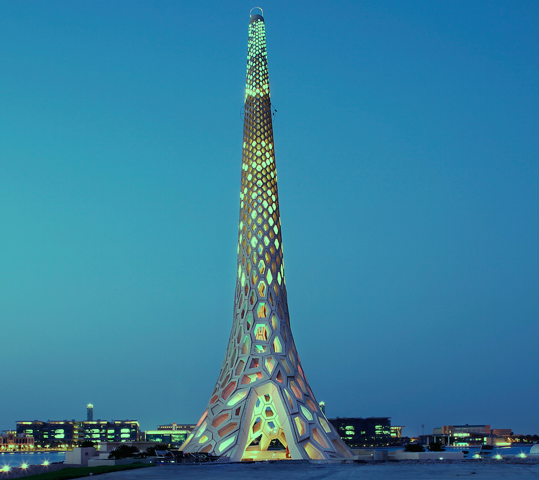

Research Computing, a department within IT, has been established to promote scientific computing on advanced computing resources essential to speedup success in research and education.
Research Computing administers state-of-the-art hybrid compute clusters, scientific software and tools, high-performance storage, high-end linux workstations, and training and support for the research & academic community at King Abdullah University of Science and Technology.
